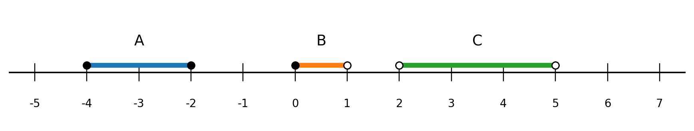
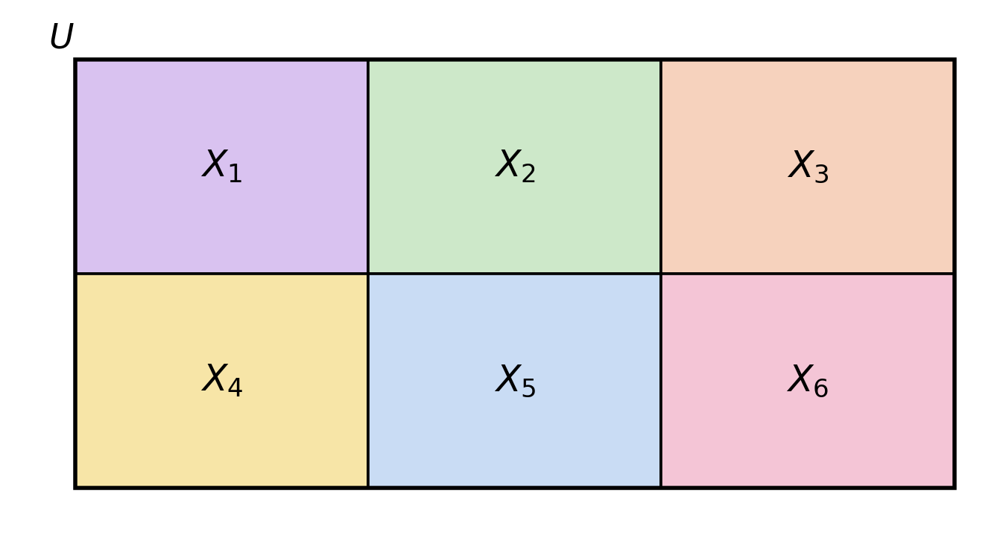

1 Modelling, Sets, and Algebra
\[ \newcommand{\R}{\mathbb{R}} \newcommand{\N}{\mathbb{N}} \newcommand{\Z}{\mathbb{Z}} \newcommand{\Q}{\mathbb{Q}} \newcommand{\Rp}{\mathbb{R}_{+}} \newcommand{\simplex}[1]{\Delta_{#1}} \newcommand{\E}{\mathbb{E}} \newcommand{\Var}{\operatorname{Var}} \newcommand{\sd}{\operatorname{sd}} \newcommand{\MAE}{\operatorname{MAE}} \newcommand{\MSE}{\operatorname{MSE}} \newcommand{\vect}[1]{\mathbf{#1}} \newcommand{\xbar}{\bar{x}} \newcommand{\normal}{\mathcal{N}} \newcommand{\ind}{\mathbf{1}} \newcommand{\card}[1]{\lvert #1 \rvert} \newcommand{\abs}[1]{\lvert #1 \rvert} \newcommand{\set}[1]{\left\{ #1 \right\}} \]
This week at a glance
By the end of this chapter you should be able to:
- take a described business situation and say which quantities are variables and which are parameters, and justify the split;
- write down the objective and constraints of a small decision problem in symbols;
- describe a set three ways — by listing, by a defining property, and as an interval — and move between them;
- read and write \(\cup\), \(\cap\), complement, and difference, and compute the size of a union without double-counting;
- expand and condense \(\sum\) notation, and prove the two identities about deviations from the mean;
- solve linear and quadratic equations, and use logarithms to turn a multiplicative relationship into a linear one.
Nothing here is new mathematics. Most of it you have met before and put down. The aim is to pick it up in a form you can use.
2 What a mathematical model is
A mathematical model is a simplified description of a real-world situation, written in symbols. We say simplified because a mathematical model leaves things out on purpose. For example, a model of a delivery network that accounted for every pothole would be useless, because you could not solve it and could not learn anything from it.
The mathematical model is represented by an equation between variables and parameters. A parameter is a quantity whose value is settled before you solve the model. It is either an input given in the problem statement, measured, or estimated from the data. A variable is a quantity whose value is produced by solving the model, or supplied by an observation.
Consider a straight-line relationship \(y = \beta_0 + \beta_1 x\). If you are a manager who has been handed \(\beta_0 = 12\) and \(\beta_1 = 3\) and asked to predict \(y\) when \(x = 20\): then \(\beta_0, \beta_1\) are parameters and \(y, x\) are variables. If instead you are an analyst holding a spreadsheet of \((x,y)\) pairs and trying to work out what \(\beta_0\) and \(\beta_1\) are, the roles swap: the data are now the inputs and the two coefficients are what you are solving for. The same symbol can play either role. Which one it plays depends on the question being asked, so keep the question in view and the classification is never ambiguous.
2.1 The components of an optimization problem (decision model)
Now the anatomy, using that example:
| Component | What it is | In the example |
|---|---|---|
| Decision variables | The quantities you choose. Unknown before solving. | \(x_A\), \(x_B\) |
| Parameters | Values handed to you. Known before solving. | unit profits 30 and 20; labor times 2 h and 1 h; capacity 100 h; demand ceilings 40 and 70 |
| Objective function | The single number you are making as large or as small as possible. | \(30x_A + 20x_B\), maximized |
| Constraints | Equations and inequalities every admissible answer must satisfy. | \(2x_A + x_B \leq 100\); \(x_A \leq 40\); \(x_B \leq 70\); \(x_A, x_B \geq 0\) |
| Assumptions | Simplifications that make the problem solvable, and that you should be prepared to defend. | unit profits constant; labor times known; maximum demand known; every unit produced can be sold |
That last row deserves a comment, because assumptions are the part of a model that does its work silently. “Every unit produced can be sold” is what lets us treat the demand ceilings as the only sales limit; drop it and unsold inventory becomes a cost the model never sees. And nothing in the mathematics stops \(x_A\) from coming out as \(15.5\) units. Here the answer happened to land on whole numbers. In general, forcing variables to be whole makes a problem substantially harder — it becomes an integer program. Recognising when you have made that assumption matters more right now than knowing how to fix it.
Confusing the objective with a constraint. “Use no more than 100 labor hours” and “make as much profit as possible” do different jobs. The first is a bar you must not cross — a constraint, written with \(\leq\) and a fixed number on the right. The second is what you optimise, and it has no number on the right at all.
A quick diagnostic: a constraint has a comparison symbol (\(\leq\), \(\geq\), \(=\)) and a fixed number. An objective has the word maximize or minimize and no comparison. If you have written “maximize profit \(\leq 1850\)”, you have merged the two.
Ranking options by the wrong unit. Product \(A\) is the more profitable product per unit and the less profitable one per labor hour. When a resource is scarce, it is profit per unit of that resource that decides. Choosing \(A\) because $30 > $20 costs $250 a week here.
2.2 Deterministic and probabilistic models
The production model is deterministic: profits, production times, capacity and maximum demand are all treated as known with certainty. Put the same inputs in twice and you get the same answer twice.
That is a strong assumption, and often a false one. The demand ceiling of 40 units for product \(A\) is really a forecast. A probabilistic (or stochastic) model replaces the fixed value with a random quantity:
\[D_A \sim \normal(40, 5^2),\]
read as “demand for \(A\) follows a normal distribution with mean 40 and standard deviation 5”.
The company would then have to choose its production level while accounting for the risk of producing more than the realized demand — a cost the deterministic model cannot represent, because in it demand is never disappointing.
In the notation \(\normal(\mu, \sigma^2)\) the second argument is the variance, not the standard deviation. Writing \(\normal(40, 5^2)\) means a standard deviation of 5. Writing \(\normal(40, 5)\) means a variance of 5, hence a standard deviation of about 2.24 — a different model. Some software, including R’s rnorm, takes the standard deviation as its argument instead, which is a frequent source of error when moving between a formula and code.
2.3 Statistical models
A third kind of model does not choose anything. It explains: given data, how does one quantity move with another?
This is where the vocabulary of dependent and independent variables belongs, and it is worth defining properly rather than mentioning in passing.
In a statistical model, the response variable (also called the dependent variable) is the quantity the model sets out to explain or predict. It sits on the left-hand side.
An explanatory variable (also called an independent variable, a predictor, a regressor, or a covariate) is a quantity used to account for variation in the response. Explanatory variables sit on the right-hand side.
In words: the response is what you want to know; the explanatory variables are what you already know and are using to guess it.
In the sales model, \(Y_i\) is the response and \(X_i\) is the explanatory variable. The names “dependent” and “independent” are older and somewhat misleading — “independent” here has nothing to do with statistical independence, and explanatory variables are frequently related to one another. This course prefers response and explanatory, but you will meet all of these words and they mean the same thing.
Do not use “response” and “explanatory” for a model with no random component. They are statistical terms; they presuppose data and unexplained variation. In a deterministic model — a supply-and-demand equilibrium, say, where you solve algebraically for a price — the right distinction is between quantities determined inside the model (endogenous) and quantities taken as given from outside it (exogenous). Calling a price an “explanatory variable” when the whole point is to solve for it is a contradiction: it cannot both explain and be the unknown.
One notational point, which now has a reason attached. The quantities \(\beta_0, \beta_1, \sigma^2\) are properties of the population and are unknown; the numbers you compute from a sample are estimates of them, written \(\hat\beta_0, \hat\beta_1, \hat\sigma^2\). The same distinction separates \(\mu\), a population mean, from \(\xbar\), a sample mean. They are different objects and the notation should not blur them.
3 Sets and subsets
A set is a well-defined collection of objects, called its elements. Sets are useful in management and analytics because so many things are naturally collections: a population, a customer segment, the domain of a variable, the set of feasible decisions, a set of observations.
We write \(x \in A\) for “\(x\) belongs to the set \(A\)”, and \(x \notin A\) for “\(x\) does not belong to \(A\)”.
3.1 Basic mathematical notation
| Symbol | Reading | Example |
|---|---|---|
| \(a = b\) | \(a\) is equal to \(b\) | \(x = 3\) |
| \(a \neq b\) | \(a\) is not equal to \(b\) | \(x \neq 0\) |
| \(a < b\) | \(a\) is less than \(b\) | \(x < 10\) |
| \(a \leq b\) | \(a\) is less than or equal to \(b\) | \(x \leq 10\) |
| \(a > b\) | \(a\) is greater than \(b\) | \(x > 10\) |
| \(a \geq b\) | \(a\) is greater than or equal to \(b\) | \(x \geq 10\) |
| \(a \in A\) | \(a\) belongs to the set \(A\) | \(\sqrt{2} \in \R\) |
| \(a \notin A\) | \(a\) does not belong to \(A\) | \(-1 \notin \N\) |
| \(\forall x\) | for every \(x\), for all \(x\), for any \(x\) | \(\forall x \in \R\) |
| \(\exists\) | there exists | \(\exists x > 0\) |
| \(\Rightarrow\) | implies | \(P \Rightarrow Q\) |
| \(\Leftrightarrow\) | is equivalent to, if and only if | \(P \Leftrightarrow Q\) |
The last two are the ones to slow down on, because they are not symmetric with each other.
3.2 Describing a set
A set can be defined in three main ways.
By enumeration — list the elements between braces: \[A = \{1, 2, 3, 4\}.\] The set \(A\) contains exactly the elements 1, 2, 3 and 4.
By a property (set-builder notation) — state the universe the elements come from, a vertical bar read “such that”, and the condition: \[B = \{\, x \in \R \mid x \geq 0 \,\}, \qquad C = \{\, x \in \R \mid a \leq x \leq b \,\}.\] \(B\) is the set of non-negative real numbers; \(C\) is the set of reals between \(a\) and \(b\) inclusive.
By an interval — for sets of consecutive real numbers only.
In words: name the members one by one, state the rule for membership, or — if the members form an unbroken stretch of the number line — give the two endpoints.
Enumeration is only practical for small finite sets. Set-builder notation is the workhorse, and it is worth being fussy about its three parts, because omitting the universe is the most common error in the topic:
\[\underbrace{\{\, x \in \R}_{\text{where } x \text{ lives}} \ \mid \ \underbrace{x \geq 0}_{\text{the condition}} \,\}\]
Write \(\{x \mid x \geq 0\}\) without the \(\in \R\) and you have not said whether you mean the non-negative integers, the non-negative reals, or something else. The universe is not decoration.
Key point. Set-builder notation matters because it is how you state precisely which values a variable or a decision is allowed to take — exactly what the constraint set of the production model did.
3.2.1 Intervals
| Notation | Set-builder form | Endpoints included? |
|---|---|---|
| \([a, b]\) | \(\{x \in \R \mid a \leq x \leq b\}\) | both |
| \((a, b)\) | \(\{x \in \R \mid a < x < b\}\) | neither |
| \([a, b)\) | \(\{x \in \R \mid a \leq x < b\}\) | left only |
| \((a, b]\) | \(\{x \in \R \mid a < x \leq b\}\) | right only |
| \([a, +\infty)\) | \(\{x \in \R \mid x \geq a\}\) | left only |
| \((-\infty, a]\) | \(\{x \in \R \mid x \leq a\}\) | right only |
The pattern: a square bracket admits the endpoint, a round bracket excludes it. Infinity always takes a round bracket, because \(+\infty\) is not a number and cannot be an element of anything.

In Figure 3.1, \(A = [-4, -2]\), \(B = [0, 1)\) and \(C = (2, 5)\). The number \(-3\) is an interior point of \(A\): it lies in \(A\) with a little room on both sides, unlike the endpoints \(-4\) and \(-2\). Note that \(B\) contains \(0\) but not \(1\), and that \(C\) contains neither \(2\) nor \(5\) — the shading conventions in the figure (filled dot included, hollow dot excluded) say the same thing the brackets do.
You may see the open interval written \(]a, b[\), with the brackets turned outwards. This is the standard French convention and means exactly the same thing as \((a,b)\). Some course slides use it. This course, and essentially all statistical software, uses \((a,b)\).
3.3 The standard number sets
| Notation | Name | Example of use |
|---|---|---|
| \(\N\) | natural numbers | \(0, 1, 2, 3, \dots\); number of customers, products, periods |
| \(\Z\) | integers | \(\dots, -2, -1, 0, 1, 2, \dots\); integer changes up or down |
| \(\Q\) | rational numbers | fractions \(p/q\) with \(p, q \in \Z\), \(q \neq 0\); exact proportions |
| \(\R\) | real numbers | numbers on the real line; return, temperature, profit |
| \(\Rp\) | non-negative reals | \([0, +\infty)\); prices, costs, revenues, probabilities |
| \(\R^p\) | real vectors of dimension \(p\) | \(\vect{x} = (x_1, \dots, x_p)\); one observation on \(p\) variables |
| \(\R^{n \times p}\) | real \(n \times p\) matrices | a whole data set: \(n\) observations, \(p\) variables |
These nest: \(\N \subset \Z \subset \Q \subset \R\). Every integer is rational (write \(-3\) as \(-3/1\)) and every rational is real. The reverse fails: \(\sqrt{2}\) and \(\pi\) are real but not rational.
\(0 \in \N\) in this course. Many textbooks start the naturals at 1. Ours starts at 0, so “\(0\) is a natural number” is true here. This is a convention, not a fact about the world, which is exactly why the course fixes one and states it.
Relatedly, \(\Rp = [0, +\infty)\) includes zero. For strictly positive reals write \((0, +\infty)\) and say so.
3.4 Absolute value of a number
The absolute value of a real number \(a\), written \(\abs{a}\), is \[\abs{a} = \begin{cases} a, & \text{if } a \geq 0, \\ -a, & \text{if } a < 0. \end{cases}\]
In words: strip the sign. The absolute value is how far the number is from zero, and distance is never negative.
For example,
\[\abs{13} = 13, \qquad \abs{-13} = -(-13) = 13, \qquad \left\lvert -\tfrac{1}{2} \right\rvert = \tfrac{1}{2}, \qquad \abs{0} = 0.\]
Note that \(-a\) is positive when \(a\) is negative, so the minus sign in the second case of the definition is not a typo.
3.4.1 Distance between two real numbers
Let \(x_1\) and \(x_2\) be real. The distance between them on the real line is \[d(x_1, x_2) = \abs{x_1 - x_2}.\] Distance is always non-negative, and it is zero exactly when the two numbers coincide: \[d(x_1,x_2) \geq 0, \qquad d(x_1,x_2) = 0 \iff x_1 = x_2.\] For \(a > 0\), \[\abs{x} < a \iff -a < x < a \iff x \in (-a, a), \qquad \abs{x} \leq a \iff x \in [-a, a].\]
In words: “\(x\) is within \(a\) of zero” and “\(x\) lies in the interval of width \(2a\) centred at zero” say the same thing. Absolute-value inequalities are interval statements in disguise.
Shifting the centre gives the form you will use most: \(\abs{u - v} \leq c\) means \(u \in [v - c,\ v + c]\). This single identity converts a large class of tolerance requirements — a machined part, a risk score, a revenue forecast — into intervals you can compute with.
3.5 Summation notation (sigma)
Summation notation is shorthand for addition. It earns its place because it lets you write a sum whose length is a symbol rather than a number, and because it makes the algebra of sums visible.
\[\sum_{i=1}^{n} a_i = a_1 + a_2 + \cdots + a_n.\]
*In words: “add up the* \(a_i\), letting \(i\) run from 1 to \(n\).” The letter \(i\) is the index, the numbers below and above \(\sum\) are the limits, and \(a_i\) is the summand.
Economists frequently use census data. Suppose a country is divided into six regions and \(N_i\) denotes the population of region \(i\). The country’s total population is then
\[N_1 + N_2 + N_3 + N_4 + N_5 + N_6 = \sum_{i=1}^{6} N_i,\]
read as “the sum of the \(N_i\) values, for \(i\) ranging from 1 to 6”.
The index is a placeholder with no meaning outside the sum: \(\sum_{j=1}^{n} a_j\) and \(\sum_{k=1}^{n} a_k\) denote the same number. This matters more than it looks — an index that also appears outside its sum is a symptom of an error.
Reading in both directions is the skill to build:
\[\sum_{i=1}^{4} x_i = x_1 + x_2 + x_3 + x_4, \qquad \sum_{j=2}^{5}(2j-1) = 3 + 5 + 7 + 9 = 24, \qquad \sum_{k=1}^{n} c = \underbrace{c + \cdots + c}_{n \text{ terms}} = nc.\]
That last one is worth staring at. The summand \(c\) does not mention \(k\), so nothing changes as \(k\) advances; you simply add \(c\) to itself \(n\) times.
3.5.1 Example: price index
Suppose the prices of several goods vary over time. Price indices summarise the overall effect of these changes.
3.5.2 Summation rules
For any numbers \(a_i, b_i\) and any constant \(c\) (a value not depending on the index):
\[\textbf{Additivity:} \quad \sum_{i=1}^{n}(a_i + b_i) = \sum_{i=1}^{n} a_i + \sum_{i=1}^{n} b_i\]
\[\textbf{Homogeneity:} \quad \sum_{i=1}^{n} c\,a_i = c\sum_{i=1}^{n} a_i\]
\[\textbf{Constant:} \quad \sum_{i=1}^{n} c = nc\]
In words: sums split across addition, constants slide out front, and a constant summand simply gets multiplied by the number of terms.
The first two together are called linearity, and they are why summation notation is worth learning: they let you manipulate sums without ever expanding them.
There is no product rule and no rule for squares. In general \[\sum a_i b_i \neq \left(\sum a_i\right)\left(\sum b_i\right), \qquad \sum a_i^2 \neq \left(\sum a_i\right)^2.\] A two-term counterexample settles it: with \(a = (1,2)\), \(\sum a_i^2 = 1 + 4 = 5\) while \(\left(\sum a_i\right)^2 = 3^2 = 9\). Linearity covers addition and constant multiples — nothing else.
3.5.3 Example: arithmetic mean and deviations from the mean
The arithmetic mean of \(n\) numbers \(x_1, x_2, \dots, x_n\) is their sum divided by \(n\): \[\xbar = \frac{1}{n}\sum_{i=1}^{n} x_i.\] The quantity \(x_i - \xbar\) is the deviation of observation \(i\) from the mean.
Multiplying through by \(n\) gives a form used constantly in derivations:
\[\sum_{i=1}^{n} x_i = n\xbar.\]
\[\sum_{i=1}^{n}(x_i - \xbar) = 0.\]
Derivation. Split the sum using additivity, then handle each piece:
\[\sum_{i=1}^{n}(x_i - \xbar) = \sum_{i=1}^{n} x_i - \sum_{i=1}^{n} \xbar.\]
The second sum has a constant summand — \(\xbar\) is one fixed number, not something that changes with \(i\) — so by the constant rule it equals \(n\xbar\):
\[= \sum_{i=1}^{n} x_i - n\xbar.\]
But \(\sum x_i = n\xbar\), so this is
\[= n\xbar - n\xbar = 0. \qquad \blacksquare\]
In words: the mean sits exactly at the balance point of the data. Whatever lies above it is matched, in total, by what lies below. This is why raw deviations are useless as a measure of spread — they always total zero however scattered the data — and hence why we square them.
\[\sum_{i=1}^{n}(x_i - \xbar)^2 = \sum_{i=1}^{n} x_i^2 - n\xbar^{\,2}.\]
Derivation. Expand the square inside the sum:
\[\sum_{i=1}^{n}(x_i - \xbar)^2 = \sum_{i=1}^{n}\left(x_i^2 - 2x_i\xbar + \xbar^{\,2}\right).\]
Split into three sums by additivity:
\[= \sum_{i=1}^{n} x_i^2 - \sum_{i=1}^{n} 2x_i\xbar + \sum_{i=1}^{n}\xbar^{\,2}.\]
In the middle sum \(2\xbar\) is constant, so pull it out by homogeneity; in the last, \(\xbar^{\,2}\) is constant, so apply the constant rule:
\[= \sum_{i=1}^{n} x_i^2 - 2\xbar\sum_{i=1}^{n} x_i + n\xbar^{\,2}.\]
Substitute \(\sum x_i = n\xbar\) into the middle term:
\[= \sum_{i=1}^{n} x_i^2 - 2\xbar(n\xbar) + n\xbar^{\,2} = \sum_{i=1}^{n} x_i^2 - 2n\xbar^{\,2} + n\xbar^{\,2},\]
and combine the last two terms:
\[= \sum_{i=1}^{n} x_i^2 - n\xbar^{\,2}. \qquad \blacksquare\]
In words: you can get the sum of squared deviations without computing a single deviation — square the raw values, add them, and subtract \(n\) times the squared mean.
\(\mu\) and \(\xbar\) are not the same object. Some sources write \(\mu_X\) for the mean of a list of numbers. In statistics \(\mu\) conventionally denotes a population mean — a fixed, usually unknown quantity — while \(\xbar\) denotes the mean computed from an observed sample. These notes use \(\xbar\) throughout for data you can see, and reserve \(\mu\) for the population. The distinction becomes essential the moment estimation appears.
3.5.4 Double sums
When data are arranged in a grid, two indices are needed: \(a_{ij}\) for row \(i\), column \(j\). Consider a rectangular array with \(m\) rows and \(n\) columns, and let \(S_i\) be the total of row \(i\):
\[ \begin{array}{ccccl} a_{11} & a_{12} & \cdots & a_{1n} & \longrightarrow \ \sum_{j=1}^{n} a_{1j} = S_1 \\ a_{21} & a_{22} & \cdots & a_{2n} & \longrightarrow \ \sum_{j=1}^{n} a_{2j} = S_2 \\ \vdots & \vdots & & \vdots & \\ a_{m1} & a_{m2} & \cdots & a_{mn} & \longrightarrow \ \sum_{j=1}^{n} a_{mj} = S_m \end{array} \]
Adding the row totals gives the grand total, and the same grand total is reached by adding column totals instead:
\[S_1 + S_2 + \cdots + S_m = \sum_{i=1}^{m} S_i = \sum_{i=1}^{m}\sum_{j=1}^{n} a_{ij} = \sum_{j=1}^{n}\sum_{i=1}^{m} a_{ij}.\]
In words: totalling by rows and totalling by columns give the same answer — you are adding the same numbers in a different order.
Reusing an index. In \(\sum_i \sum_i a_{ii}\) the two sums collide and the expression is meaningless; each sum needs its own letter. Likewise, if the index survives into your final answer — “\(\sum_{i=1}^n x_i = n x_i\)” — something has gone wrong.
3.6 Subsets, cardinality, and set operations
A set \(A\) is a subset of \(B\) if every element of \(A\) also belongs to \(B\): \[A \subseteq B \iff \forall x, \ x \in A \Rightarrow x \in B.\]
In words: \(A\) sits entirely inside \(B\). Nothing in \(A\) escapes.
Two further terms:
- The universal set \(U\) is the reference set within which we are working.
- The cardinality of a finite set \(A\), written \(\card{A}\), is its number of elements.
So \(\card{\{1,2,3,4\}} = 4\), and \(\card{\varnothing} = 0\) where \(\varnothing\) is the empty set.
Let \(A\) and \(B\) be two subsets of a universal set \(U\).
| Operation | Notation | Definition | Management interpretation |
|---|---|---|---|
| Union | \(A \cup B\) | \(\{x \in U \mid x \in A \text{ or } x \in B\}\) | customers in at least one of the two segments |
| Intersection | \(A \cap B\) | \(\{x \in U \mid x \in A \text{ and } x \in B\}\) | customers in both segments simultaneously |
| Difference | \(A - B = A \cap B^c\) | \(\{x \in U \mid x \in A \text{ and } x \notin B\}\) | customers in \(A\) but not in \(B\) |
| Complement | \(A^c = U - A\) | \(\{x \in U \mid x \notin A\}\) | customers in the universe who are not in \(A\) |
The “or” in the union is inclusive: \(x\) may be in \(A\), in \(B\), or in both. Everyday English often uses “or” exclusively (“tea or coffee” usually rules out both), which is a real source of confusion. Mathematical “or” never does.
For finite sets \(A\) and \(B\), \[\card{A \cup B} = \card{A} + \card{B} - \card{A \cap B}.\]
In words: add the two sizes, then subtract the overlap once — anything in both sets got counted twice when you added.
Adding segment sizes without subtracting the overlap. “Segment \(A\) has 600 customers and segment \(B\) has 500, so we can reach 1,100” is wrong whenever the segments overlap. If 300 belong to both, the reachable total is \(600 + 500 - 300 = 800\). This error is endemic in campaign reporting, where it inflates reach. The two counts add cleanly only when \(A \cap B = \varnothing\).
3.6.1 Cartesian product and multidimensional observations
The Cartesian product of \(A\) and \(B\) is the set of ordered pairs whose first component belongs to \(A\) and whose second belongs to \(B\): \[A \times B = \{(a, b) \mid a \in A, \ b \in B\}.\]
In words: every possible pairing of something from \(A\) with something from \(B\). Order matters — \((a,b)\) and \((b,a)\) are different pairs.
Repeating this construction gives \(\R^p\). In a data set an individual is usually described by several variables at once, and is therefore represented by a vector:
\[\vect{x}_i = \left(x_{i1}, x_{i2}, \dots, x_{ip}\right) \in \R^p,\]
where \(p\) is the number of variables measured for individual \(i\).
Stacking \(n\) such observations gives the data set as a matrix
\[X = (x_{ij}) \in \R^{n \times p},\]
where \(x_{ij}\) is the value of variable \(j\) for observation \(i\): rows are observations, columns are variables.
Reading \(n\) and \(p\) off the wrong axis. A data set in \(\R^{100 \times 8}\) has 100 observations and 8 variables, not the other way round. In these notes \(n\) always means the number of observations and \(p\) always the number of variables; no other letter is used for either.
3.6.2 Partition of a universal set
Let \(X_1, X_2, \dots, X_k\) be non-empty subsets of \(U\). The family \(\{X_i\}_{i \in \{1,2,\dots,k\}}\) forms a partition of \(U\) if
\[\bigcup_{i=1}^{k} X_i = U \qquad \text{and} \qquad X_i \cap X_j = \varnothing \ \text{ for every } i \neq j,\]
where
\[\bigcup_{i=1}^{k} X_i = X_1 \cup X_2 \cup X_3 \cup \cdots \cup X_k.\]
In words: the subsets carve \(U\) into pieces with no gaps and no overlaps — every element of \(U\) lands in exactly one piece.
The phrase “exactly one” is the whole content of the definition. The union condition gives at least one; the disjointness condition gives at most one. Together: exactly one.

Partitions are what a categorical variable does to a data set. Assigning every customer a tier, every transaction a region, or every ticket a priority partitions the population — provided the categories are built correctly.
Boundary values landing in two classes. Suppose customers are banded by annual spend into \([0, 500]\), \([500, 2000]\) and \([2000, \infty)\), with square brackets throughout. A customer spending exactly $500 qualifies for the first and the second, and one spending $2000 for the second and the third. That is not a partition: the bands sum to more than the customer base, and a customer’s band depends on which rule the query happens to evaluate first.
The fix is to close on the left and open on the right — \([0, 500)\), \([500, 2000)\), \([2000, \infty)\) — for every band except the last. This is the convention nearly all statistical software follows when binning a continuous variable, and it is worth adopting as a habit.
3.6.3 The simplex
One particular set recurs often enough — in weights, proportions, market shares, predicted class probabilities — to deserve a name.
The simplex in \(\R^p\) is \[\simplex{p} = \left\{ \vect{w} \in \R^p_{+} \ \middle|\ \sum_{j=1}^{p} w_j = 1 \right\}.\]
In words: the set of vectors with \(p\) non-negative components adding to exactly 1 — that is, all possible ways of splitting a whole into \(p\) shares.
Both conditions are needed. Non-negativity alone permits shares summing to 3; summing to 1 alone permits a negative share. The subscript \(p\) counts components.
Superscript versus subscript on \(\Delta\). You will meet \(\Delta^2\), \(\Delta_3\) and \(\Delta^{K-1}\) in different sources, all describing three shares summing to one. The disagreement is over whether the index counts components (3) or dimensions (2 — a triangle is two-dimensional even though it sits in three-dimensional space). This course always uses the subscript and always counts components: \(\simplex{p}\) has \(p\) of them.
4 Essential algebra for working with models
Algebra is what lets you transform the relationships above: simplify an expression, isolate a variable, solve an equation, linearize a relationship, or prepare an optimization problem. The operations are ones you have seen; what is worth rebuilding is the fluency to apply them without hesitation, because in later weeks they will be steps inside a larger argument rather than the point of the exercise.
4.1 Algebraic expressions
An algebraic expression combines numbers, variables and operations. The basic manipulations:
| Operation | Formula | Purpose |
|---|---|---|
| Combine like terms | \(2x + 3x = 5x\) | group like terms |
| Expand | \(a(b + c) = ab + ac\) | remove parentheses |
| Factor | \(ab + ac = a(b + c)\) | factor out a common factor |
| Square of a sum | \((a+b)^2 = a^2 + 2ab + b^2\) | simplify quadratic functions |
| Difference of squares | \(a^2 - b^2 = (a-b)(a+b)\) | solve or factor expressions |
\((a+b)^2 \neq a^2 + b^2\). The cross term \(2ab\) is not optional — test with \(a = b = 1\): the left side is 4, and \(a^2 + b^2 = 2\). The same error in other costumes: \(\sqrt{a+b} \neq \sqrt{a} + \sqrt{b}\), and \(\dfrac{1}{a+b} \neq \dfrac{1}{a} + \dfrac{1}{b}\).
4.2 Polynomials and quadratic equations
A polynomial of degree \(n\) is an expression of the form
\[P(x) = a_n x^n + a_{n-1}x^{n-1} + \cdots + a_1 x + a_0, \qquad a_n \neq 0.\]
The condition \(a_n \neq 0\) is what makes the degree well defined — it is the highest power that actually appears.
Examples.
- \(P(x) = 3x + 1\): a polynomial of degree 1.
- \(P(x) = 2x^2 - 3x + 1\): a polynomial of degree 2.
- \(Q(x) = 5x^3 + x - 7\): a polynomial of degree 3. Note that the \(x^2\) term is simply absent, which is allowed; only the leading coefficient must be non-zero.
4.2.1 Roots of a first-degree polynomial
A linear equation in one unknown is written
\[ax + b = 0, \qquad a \neq 0,\]
with the single solution
\[x = -\frac{b}{a} = -a^{-1}b.\]
The condition \(a \neq 0\) matters. If \(a = 0\) the equation reads \(b = 0\), which is either always true (when \(b = 0\), so every \(x\) works) or never true (when \(b \neq 0\), so no \(x\) does). Dividing by \(a\) without checking it is non-zero is the standard way to lose a case.
4.2.2 Roots of a quadratic polynomial
A quadratic equation is written \[ax^2 + bx + c = 0, \qquad a \neq 0,\] and its discriminant is \[\Delta = b^2 - 4ac.\]
The letter \(\Delta\) is doing two unrelated jobs in this course. Bare \(\Delta\), as here, is the discriminant of a quadratic — a single number. Subscripted \(\simplex{p}\), from the previous section, is the simplex — a set of vectors. They have nothing to do with each other; the alphabet is simply short. The subscript is what tells them apart, so read it.
- If \(\Delta > 0\), there are two distinct real roots: \[x_1 = \frac{-b - \sqrt{\Delta}}{2a}, \qquad x_2 = \frac{-b + \sqrt{\Delta}}{2a}.\]
- If \(\Delta = 0\), there is one repeated real root: \[x = -\frac{b}{2a}.\]
- If \(\Delta < 0\), there is no real root.
In words: the discriminant is a preview. Compute it first and you know how many answers to expect before doing any work — and whether a real answer exists at all.
The repeated root \(-b/(2a)\) is also the vertex of the parabola \(y = ax^2 + bx + c\) in every case, sitting midway between the two roots when they exist. When \(a < 0\) the parabola opens downward and the vertex is a maximum, which is why quadratics appear in profit problems.
4.3 Exponents and logarithms
For \(a, b > 0\) and compatible exponents, the basic rules are
\[a^m a^n = a^{m+n}, \qquad \frac{a^m}{a^n} = a^{m-n}, \qquad (a^m)^n = a^{mn},\]
\[(ab)^n = a^n b^n, \qquad a^{-n} = \frac{1}{a^n}, \qquad a^0 = 1.\]
For equations with the same positive base \(a \neq 1\),
\[a^f = a^g \iff f = g, \qquad \text{and in particular} \qquad e^f = e^g \iff f = g.\]
\(a^m a^n = a^{m+n}\), not \(a^{mn}\). Exponents add when you multiply powers, and multiply only when you raise a power to a power. Check with small numbers whenever unsure: \(2^2 \cdot 2^3 = 4 \cdot 8 = 32 = 2^5\), and \(5 = 2 + 3\).
The logarithm to base \(a > 0\), with \(a \neq 1\), is defined by \[\log_a(x) = y \iff a^y = x.\] The natural logarithm is written \(\ln\) and corresponds to base \(e\): \[\ln(x) = y \iff e^y = x.\]
*In words: a logarithm answers “what power do I raise the base to, in order to get* \(x\)?” It is the exponential run backwards.
Useful rules, all of which follow from the exponent rules because logarithms are exponents:
\[\ln(xy) = \ln x + \ln y, \qquad \ln\!\left(\frac{x}{y}\right) = \ln x - \ln y, \qquad \ln(x^r) = r\ln x,\]
\[\ln(e) = 1, \qquad \ln(1) = 0, \qquad \ln(e^x) = x, \qquad e^{\ln x} = x \ \ (x > 0).\]
And for equations,
\[\log_a(f) = \log_a(g) \iff f = g, \qquad \text{in particular} \qquad \ln(f) = \ln(g) \iff f = g.\]
The rule \(\ln(x^r) = r \ln x\) is the one that does the work in this course: it is how an unknown stuck in an exponent gets brought down where you can solve for it.
Two distinct traps.
The notation. “\(\log\)” is ambiguous. In R and most mathematical writing, log(x) is the natural logarithm; in many spreadsheets, calculators and engineering texts, LOG means base 10. These notes always write \(\ln\) for the natural log and always show the base otherwise. When reading anything else, check.
The algebra. There is no rule for the logarithm of a sum: \[\ln(x + y) \neq \ln x + \ln y.\] The left side does not simplify at all. What \(\ln x + \ln y\) equals is \(\ln(xy)\) — a product, not a sum. This is probably the most common algebra error in the course.
4.3.1 Applied example: exponential growth and decay
An initial quantity \(Q_0\) that increases by \(p\%\) each year has, after \(t\) years, the value \[Q_0\left(1 + \frac{p}{100}\right)^{t}.\] An initial quantity \(Q_0\) that decreases by \(p\%\) each year has, after \(t\) years, the value \[Q_0\left(1 - \frac{p}{100}\right)^{t}.\] The number \(1 + p/100\) is the growth factor associated with an increase of \(p\%\); the number \(1 - p/100\) is the decay factor associated with a decrease of \(p\%\). Here \(Q_0\) is the initial value, \(p\) the annual rate as a percentage, and \(t\) the number of years.
The factor is multiplied repeatedly rather than added because each year’s change applies to the new total, not to the original. That is what “compound” means, and it is the entire content of the formula.
5 Proof techniques, propositions, and quantifiers
This section is built during the lecture rather than before it. It covers propositions and quantifiers (\(\forall\), \(\exists\), \(\exists!\)), implication and equivalence, necessary and sufficient conditions, and the five proof strategies: direct proof, proof by contrapositive, proof by contradiction, mathematical induction, and disproof by counterexample.
Notes will be added here after the session.
One thing is worth flagging in advance, because it trips up anyone who has written code. The symbol \(\exists!\) means “there exists exactly one” — the ! marks uniqueness, not negation. It is a stronger claim than \(\exists\), not its opposite:
\[\exists x\, P(x) \quad \text{means at least one } x \text{ works;}\] \[\exists!\, x\, P(x) \quad \text{means exactly one } x \text{ works.}\]
For instance \(\exists x \in \R\) with \(x^2 = 4\) is true — both \(2\) and \(-2\) qualify — but \(\exists!\, x \in \R\) with \(x^2 = 4\) is false, precisely because there are two. Negation is written \(\neg\), or \(\nexists\) for “there does not exist”.
One-minute recap
- Variable or parameter? Ask whether you know the number before you start solving. Known in advance \(\Rightarrow\) parameter. The same symbol can switch roles when the question changes.
- When a resource is scarce, rank options by return per unit of that resource, not per unit of output. Product \(A\) wins on profit per unit and loses on profit per labor hour.
- Set-builder notation needs a universe. \(\{x \in \R \mid x \geq 0\}\), not \(\{x \mid x \geq 0\}\).
- Brackets: square includes the endpoint, round excludes it. Infinity always gets round.
- \(\abs{u - v} \leq c\) is the interval \([v - c,\ v + c]\). Every tolerance statement is an interval statement.
- \(\card{A \cup B} = \card{A} + \card{B} - \card{A \cap B}\) — subtract the overlap or you double-count.
- A partition means exactly one. Use half-open bands \([a,b)\) so boundary values land in one bin only.
- \(\sum\) is linear and nothing more: it splits over \(+\) and lets constants out. There is no product rule.
- \(\sum(x_i - \xbar) = 0\) always. Use it as an arithmetic check on any mean you compute.
- An index of 150 is a 50% increase, not a 150% one.
- Logs turn powers into products and products into sums — that is how you get an unknown out of an exponent. But \(\ln(x+y)\) does not simplify.
- Growth compounds. Losing 15% a year for six years is \(\times (0.85)^6\), not \(\times (1 - 6 \times 0.15)\).
- In this course: \(0 \in \N\); \(n\) = observations, \(p\) = variables; vectors are bold; \(\ln\) is the natural log.